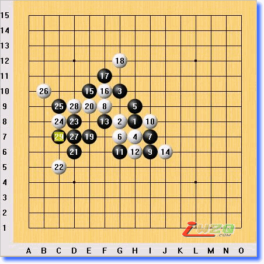

上海棋王战葛凌峰绝地反击
五子棋新闻
#1 上海棋王战葛凌峰绝地反击
作者：有志青年 发表时间：2008-1-12 21:47:46
1月12日下午一点，在古滇茶坊进行了棋王战五番战的第三轮。由于前两轮顾炜八段2：0领先，所以本局堪称天王山之战，引起了诸多棋友的关注。由于第二轮葛凌峰七段开了黑大优局——溪月，所以本轮顾礼尚往来，还以另一黑大优局——残月。顾开了残月后，葛不假思索立即交换。行进至黑15，局面黑已是大优之势，白仍顽强拼搏至黑29后无奈认负。黑以下风车胜。

黑：葛凌峰（56'） 白：顾炜（69'）